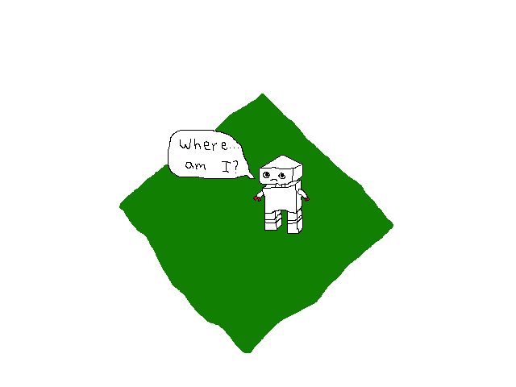

Arvindh Does Things
Arvindh Does Things
On Friendships and Happiness
November 23, 2022In an episode of one of CGP Grey's podcasts (I unfortunately can't remember), I was first introduced to the concept of explore-exploit algorithms.
The setup for these is pretty basic. I like to imagine it as a robot being teleported into this infinite 2D plane. Randomly scattered on the plane are different resources which — crucially — have different values. Each of these resources can be mined infinitely, with the value solely deciding how fast the robot gains points from mining that resource.

The question is, given a time constraint, what should the robot do to optimize its points by the end of the time? To add, the robot knows nothing about the relative frequencies of the resources and the values of resources cannot be ascertained until the robot has mined them for a non-neglible amount of time.
Upon some reflection, it becomes obvious that the robot's optimal decision is to explore for some time (checking the value of each resource) and then exploit the highest-valued found resources for the remaining time[1].
This situation has an obvious correspondence with looking for friends. Much like robots, there are essentially an infinite number of possible friends[2]. Each friend has a different value, corresponding to the happiness we gain from being friends with them. And we fundamentally have limited time — our lifespan — to maximize our happiness within.
However, there are three main factors that distinguish this situation from the situation of humans looking for friends, and the first is (wait for it)...
Heuristics
Unlike the robot, we have access to a variety of heuristics about the potential value of friends. There are heuristics we implicitly use before even talking to them: analyzing their habits (based on the context in which we meet them), their physical characteristics, their fashion, etc. And there are also heuristics we use during our first conversation with them: observing their humor, their eye contact, their intelligence, their laugh, their way of talking, etc.
So we, unlike the robot, scan ahead. Using the heuristics, we can establish an approximate floor for the value of a friendship; we say to ourselves that we feel like we could be friends with them.
But one thing I've realized recently is the problem with using such heuristics: getting friendships is a problem that can't be solved with greedy algorithms using heuristics[3]. At each instance, I'm best off by finding people who conform to my heuristics (which happens to disproportionately be extroverted nerdy guys), but the aggregate effect of that is having a friend group that's rather unbalanced in terms of interests — an echo chamber of personality. And so the happiness I get from each additional person who conforms decreases (i.e., there is attenuating marginal benefit).
As such, how can we best use the heuristics? One option is to simply disregard the heuristics altogether and make a conscious choice to attempt to befriend people equally. Another is to try to attenuate the importance of the heuristics over time. I find both of these pretty hard to implement personally, though.
Network Effects
Besides our ability to use heuristics, there's also the presence of network effects; it's easier to become friends with someone if you are friends with their friends.
So, from a certain perspective, the value a friend encapsulates also includes the value of the potential friends you could make by being friends with them.
From a consequentialist standpoint, there's no real problem with this mindset of being friends with someone because of their network; they gain a friend and you gain a friend, so everyone is better off. From their perspective, there is no difference between you being a friend for the sake of the happiness you gain from hanging out with them specifically versus you being a friend for the sake of the happiness you gain from hanging out with them and their network. In either instance, your incentives lead you to treat them like a close friend.
Still, viewing friends as a means instead of an end feels a bit morally suspect to me. In both instances, you evaluate friends based on the happiness they bring you; you (probably) wouldn't be friends with someone who, on net, makes you less happy. But including their network in that calculation feels strange, even though, rationally, you should.
I don't really know how to resolve this. Optimally, we'd incorporate the value of people's networks into our calculations of friendship, but that obviously seems a bit morally repugnant. The reconciliation is thus left as an exercise for the reader.
Stickiness
Unlike the robot who can losslessly switch between resources, we have a certain stickiness with respect to friends. We form emotional attachments, and there are societal pressures to stick with them.
After all, we find it difficult to leave friends who even make us on-net unhappy. It would be infinitely harder to leave friends that make us happy but don't make us as happy as we could be with other friends, even though that opportunity cost is a real cost of being friends with them. Combined with the fact that we have network effects, this implies that
Footnotes
[1] A simple proof, which I first saw outlined in Langford et al.'s "Competitive Analysis of the Explore/Exploit Tradeoff," is as follows: imagine exploiting during round t and exploring during a later round t'. Next, imagine instead exploring during round t and exploiting during round t'. This change obviously does not change rewards from (0, t), but improves rewards in the interval (t, t'). This obviously holds for all such pairs t and t'. As such, we can be certain that we should start by exploring and then exploiting.
[2] Obviously, there is not actually an infinite number of potential friends. But, considering the fact that we humans can only handle a few hundred friendships at maximum, the 7.8 billion people is functionally an infinite supply of potential friends.
[3] This is assuming your calculations for the greedy algorithm don't account for the attenuation of marginal benefit. I guess they could? But the interpretation I intended is that the greedy algorithm is based on your heuristics, which (at least for me personally) don't account for that effect.